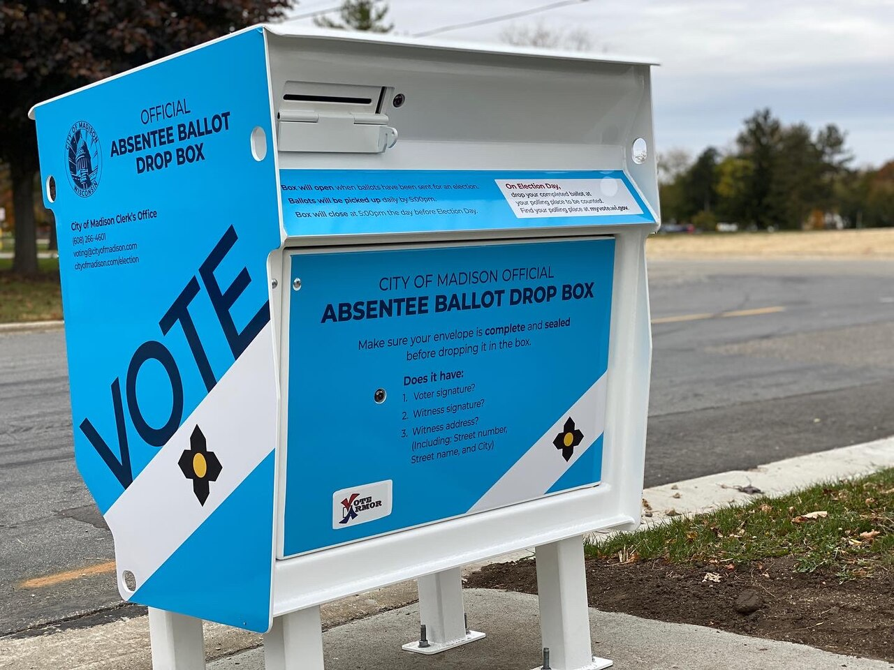

GRIEVANCE XIX ◆ THE FRANCHISE
He has attempted to alter the rules of the ballot by executive will, against the authority reserved to states and Congress.
THE RECORD SHOWS
Trump issued election orders seeking proof-of-citizenship requirements, federal voter lists, and restrictions on mail ballots; significant provisions were blocked by courts.

Different parts of the administration’s election program have met different outcomes. Courts have blocked major citizenship and mail-ballot provisions, while other litigation remains pending. The administration argues these measures protect election integrity; opponents say they risk excluding eligible voters.
A DOCUMENTED SEQUENCE
3 MILESTONES- March 2025An executive election order sought new documentary proof of citizenship and altered federal election administration.
- Spring 2026Trump issued an additional order addressing mail ballots; states and voting groups challenged it.
- September 2026Federal courts rejected or blocked significant mail-ballot restrictions while a Supreme Court dispute proceeded.
READ THE SOURCES
7 LINKS- Judge blocks additional citizenship provisions in latest setback to Trump’s wide-ranging election executive order
- Democrats sue to block Trump’s executive order targeting mail ballots
- What to know about Trump’s effort to restrict mail ballots
- Trump administration takes mail-in ballot fight to US Supreme Court
- US appeals court rejects Trump bid to implement mail-in voting restrictions
- Trump’s mail-in voting restrictions blocked by second judge
- New SAVE Act bills would still block millions of Americans from voting